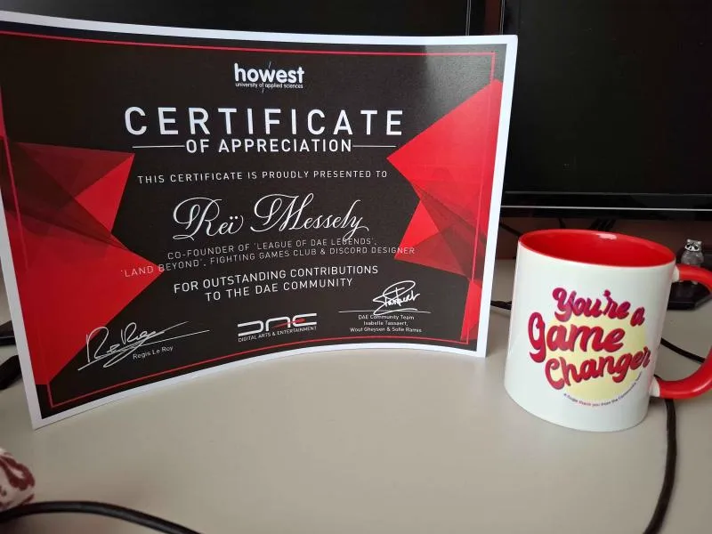
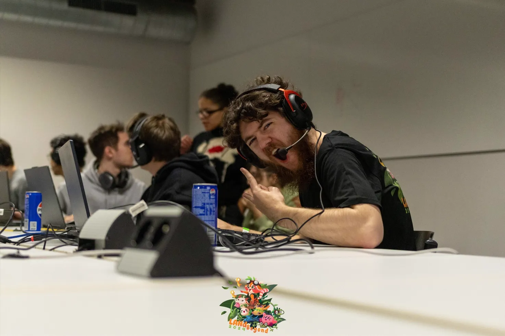
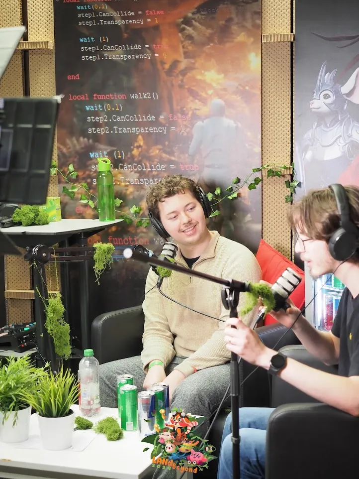

LAN parties (+ student clubs)
Main driver and person responsible for various LAN parties & student clubs
About
My journey starts at Promised LAN, which was a yearly, student-ran, LAN party. I helped out as tournament supervisor, mostly for League of Legends. I helped streamline the process and reduce workload by integrating Challonge. Besides that, I was making sure people were getting into their matches, troubleshooting both technical problems as people problems (no-shows, people showing up late, ...)
Eventually, I founded League of DAE Legends, as the name implies, it's a student club focused on League Of Legends. I took the main lead in
organising tournaments, online events and building tools
to make our lives easier. Tools like SquadForger and LeagueJunction. My main goal was to bring people together and break the stereotype of toxic League Of Legends players. We forced people to sign up alone and tried to make balanced teams based on their ranks. Because people got into teams with people they don't know, with widely different skill levels and because of the in person element, people were forced to collaborate and help their weaker teammates. This was my first venture into being a leader and managing people. Our events ranged from 10 to 40 participants. Eventually I had to pass the torch, which introduced me to mentoring and teaching which I also very much enjoyed.I couldn't let go of the awesome feeling LAN parties bring, so I was roped back in when good friends of mine were floating the idea to bring back Promised LAN under a new name and some new energy. Because of my experience and my organisational skills, I was one of the major contributors. I took sole responsibility of the "DAE's greatest gamer" event, which was an event inspired by Ludwig's Greatest Gamer where people compete in a tournament where the games are gradually revealed throghout the tournament. This was an absolute blast to organise, cast and see players enjoy.
Screenshots


